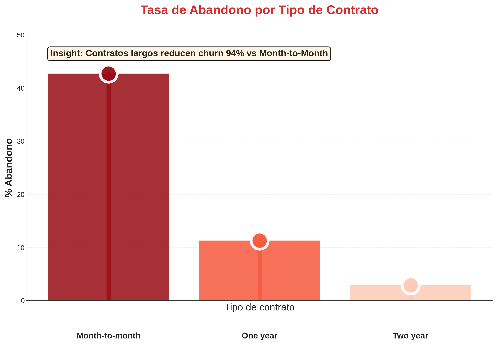
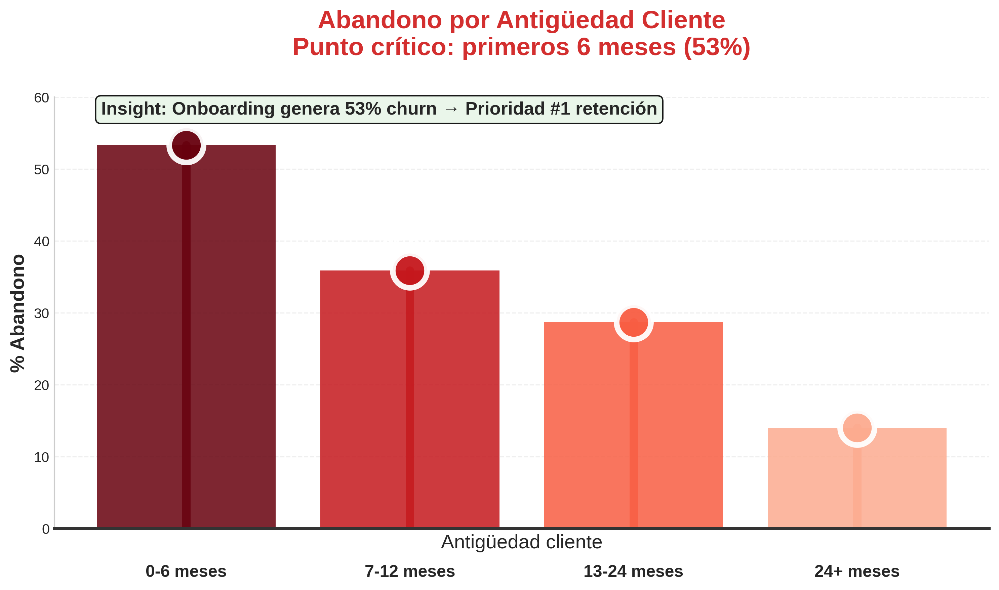
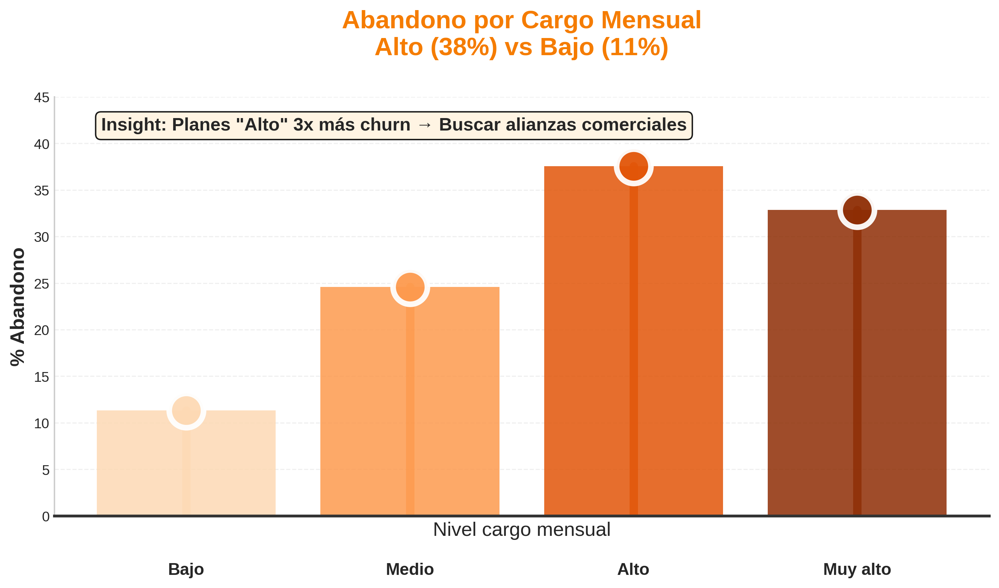
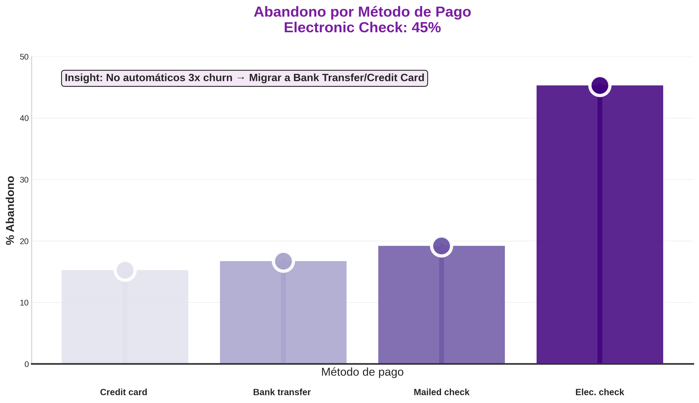
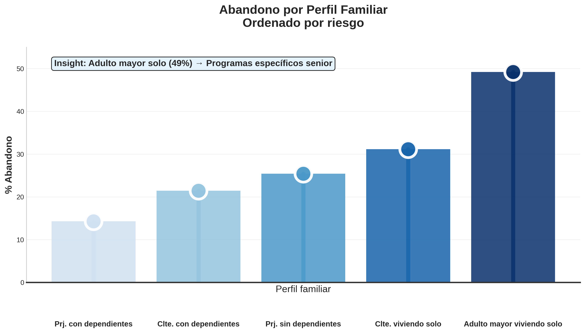
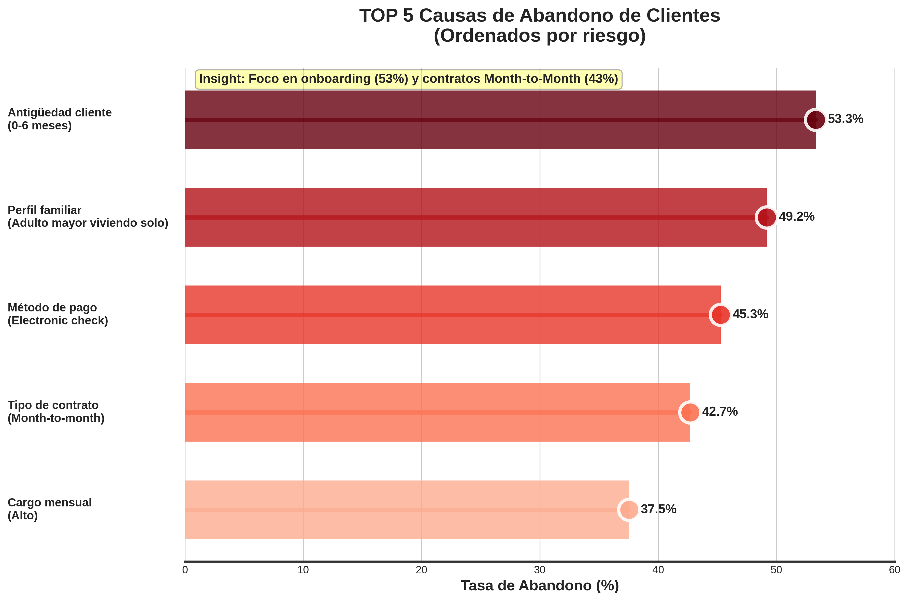

Telecom X presenta una tasa de abandono del 26.6%, equivalente a que 1 de cada 4 clientes cancela el servicio. Este nivel es alto para la industria y requiere identificar los factores que impulsan el churn.
El análisis exploratorio permitió detectar cinco drivers principales: tipo de contrato, antigüedad, cargo mensual, método de pago y perfil familiar.
Analizar los datos de clientes de Telecom X para identificar patrones de abandono, preparar un dataset limpio para modelos predictivos y generar insights accionables.
Los datos fueron extraídos desde un archivo JSON y normalizados con pd.json_normalize.
Se realizaron conversiones de tipos, limpieza de nulos, renombrado de columnas, creación de grupos de antigüedad, cargo mensual y perfil familiar.
Se evaluó la relación entre churn y variables clave mediante tablas porcentuales, visualizaciones y comparativas.
Los contratos Month-to-Month presentan la mayor tasa de abandono (~43%).
| Tipo Contrato | Permanece (%) | Abandona (%) | Tasa Abandono (%) |
|---|---|---|---|
| Month-to-month | 57.3 | 42.7 | 42.7% |
| One year | 88.7 | 11.3 | 11.3% |
| Two year | 97.2 | 2.8 | 2.8% |

Los clientes con 0–6 meses presentan un churn crítico del 53%.
| Antigüedad | Permanece (%) | Abandona (%) | Tasa Abandono (%) |
|---|---|---|---|
| 0-6 meses | 46.7 | 53.3 | 53.3% |
| 7-12 meses | 64.1 | 35.9 | 35.9% |
| 13-24 meses | 71.3 | 28.7 | 28.7% |
| 24+ meses | 86.0 | 14.0 | 14.0% |

Los cargos altos incrementan el churn hasta 37.5%.
| Cargo Mensual | Permanece (%) | Abandona (%) | Tasa Abandono (%) |
|---|---|---|---|
| Bajo | 88.7 | 11.3 | 11.3% |
| Medio | 75.4 | 24.6 | 24.6% |
| Alto | 62.5 | 37.5 | 37.5% |
| Muy alto | 67.1 | 32.9 | 32.9% |

Electronic Check presenta la tasa más alta (45.3%).
| Método Pago | Permanece (%) | Abandona (%) | Tasa Abandono (%) |
|---|---|---|---|
| Bank transfer (automatic) | 83.3 | 16.7 | 16.7% |
| Credit card (automatic) | 84.7 | 15.3 | 15.3% |
| Electronic check | 54.7 | 45.3 | 45.3% |
| Mailed check | 80.8 | 19.2 | 19.2% |

El segmento más vulnerable es: Adulto mayor viviendo solo (49.2%).
| Perfil Familiar | Permanece (%) | Abandona (%) | Tasa Abandono (%) |
|---|---|---|---|
| Adulto mayor viviendo solo | 50.8 | 49.2 | 49.2% |
| Cliente con dependientes | 78.6 | 21.4 | 21.4% |
| Cliente viviendo solo | 68.8 | 31.2 | 31.2% |
| Pareja con dependientes | 85.7 | 14.3 | 14.3% |
| Pareja sin dependientes | 74.6 | 25.4 | 25.4% |

| Factor | Segmento de Mayor Riesgo | Tasa Abandono (%) |
|---|---|---|
| Antigüedad Cliente | 0-6 meses | 53.3% |
| Perfil Familiar | Adulto mayor viviendo solo | 49.2% |
| Método de Pago | Electronic check | 45.3% |
| Tipo de Contrato | Month-to-month | 42.7% |
| Cargo Mensual | Alto | 37.5% |

El churn está fuertemente asociado a condiciones específicas del cliente y del servicio. Los resultados permiten orientar estrategias de retención y sirven como base para un modelo predictivo.
Insight clave: El factor crítico es la antigüedad en los primeros 6 meses. Una experiencia de onboarding mejorada podría reducir significativamente el abandono.